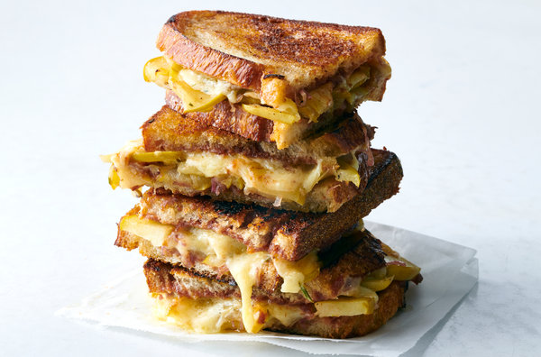

Grilled Cheese

If you dont appreciate a good grilled cheese, well...
Ingredients
- Texas style thick cut bread
- Gruyere cheese sliced thick
- Butter
- Paprika
- cast iron skillet
Steps
- Slowly bring the skillet up to a medium heat
- Put 2 tbls of butter into skillet
- Once melted place both sides of the bread in the skillet and allow butter to cover them well
- Place a slice of cheese on each slice of bread
- Gentle sprinkle a like flurry of parpika over the cheese
- Once the cheese started to melt, or atleast wilt, flip one side of the sandwich onto the other
- Flip occasionaly to assure nice consistant browning on either side